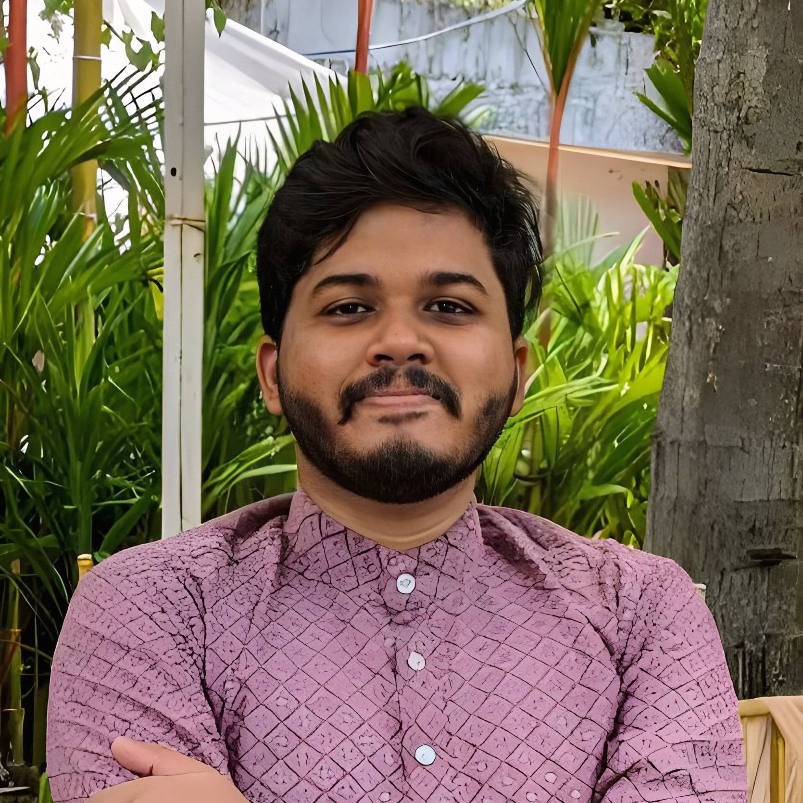
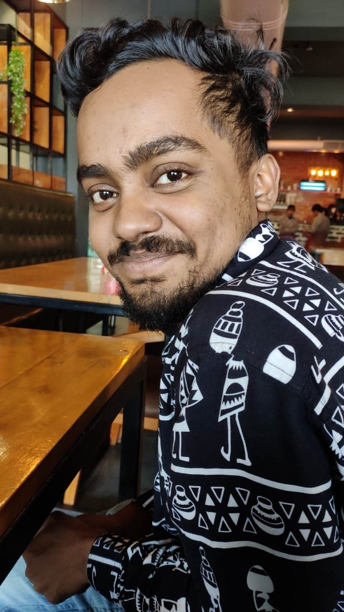
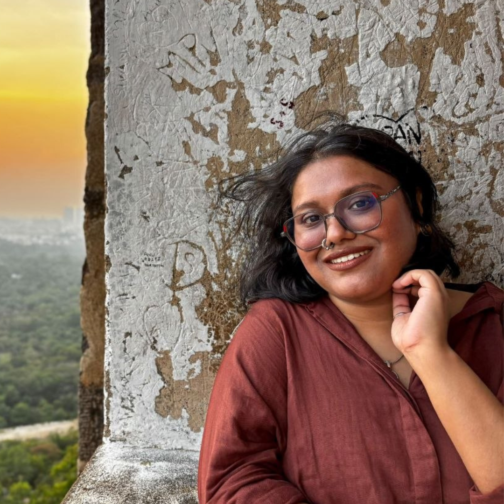

The people who keep Platform Bengali running, and those who have lent a hand along the way. This page is also the project's record of acknowledgement for each of them.
Principal Investigator
Platform Bengali is an IFA Arts Research grant awarded to Prithu Halder, who leads and coordinates the project.

PH
Project Coordinator & Principal Investigator
Prithu Halder
On paper, he's a final-year PhD scholar at an IIT, and the one who runs this project and keeps watch over Fort Bhashascope. In practice, he does a bit of everything. He's a technophile who also can't walk past a bookshop, and he moves between spreadsheets and close reading as if they were the same job. He writes regularly for Bengali newspapers and magazines and turns up in several academic circles.
Academically, he works across literature, cultural studies and film studies. As an interdisciplinary scholar of emerging media technologies, he also wanders into Digital Humanities and Critical AI Studies, and his toolkit keeps growing to match, usually with something that came out last week. Mostly he's a magpie: he picks up an idea, a book or a stray bit of trivia from everyone he meets and carries it home. Very little in this world (or the next) escapes his curiosity. People who don't know him take him for a terribly serious man; anyone who has sat across from him in an intimate adda session knows better.
ইনি হলেন পালের গোদা। নিধিরাম সর্দার। কাগজে কলমে এখন আই আইটিতে তাঁর পিএইচডি এর অন্ত্যেষ্টি ক্রিয়ায় ব্যস্ত। কিন্তু এই প্রকল্পে তিনি সর্বঘাটের কাঁঠালি কলা। নতুন প্রযুক্তি দেখলে তাঁর যেমন হাত নিশপিশ করে, তেমনি বইয়ের দোকানের সামনেও তাকে হামলে বুভুক্ষুর মতো বই গিলতে দেখা যায় প্রায়শই। স্প্রেডশিট, সাহিত্য আর সিনেমা নিয়ে যেমন দুহাতে জাগলিং করেন, তেমনি বাংলা পত্র পত্রিকাতেও তাঁর লেখাপত্রও হঠাৎ হঠাৎ নজরে পড়তে পারে।
আড্ডায় আঁতেল আর স্বভাবে ফিচেল লোকটাকে যারা ব্যক্তিগত ভাবে চেনে না, তাঁদের মনে হবে হেব্বি গম্ভীর। আন্তঃবিষয়ক গবেষক হিসেবে নানা বিষয়ের করিডোরে তাঁর যাতায়াত। ডিজিটাল হিউম্যানিটিজ এও তিনি আছেন, আবার ক্রিটিকাল এ আই স্টাডিজেও তিনি উঁকি মারেন। ধর্মে তিনি জিরাফ, ডালে, ঝোলে অম্বলে তাঁর কিউরিওসিটিই সম্বল। নজর রাখেন রোজকার নতুন প্রযুক্তি আর খবরে। কাজের ফাঁকে ফাঁকে মাধুকরী করে তুলে আনেন চিন্তার খুদকুঁড়ো।
The people who run the project with him, day to day.
01Research Associate

SB
Research Associate
Soumyajit Biswas
Officially, he's a PhD scholar at an IIT working on Dalit literature, in the final round with a 450-page thesis, which is what happens when you want to footnote everything you've ever read. On the project he's the Master of Coin, and he guards the budget the way a dragon guards gold.
Off the clock, he's an early-Reddit old-timer who spent years in sci-fi and speculative fiction forums soaking up pulp lore. Add dark humour, an allergy to institutional rules and a well-argued opinion on nearly everything, and you get someone who possesses a formidable sardonic wit. When life gets too heavy, which is often, he retreats to Terry Pratchett's Discworld.
ইনিও আরেক আই আই টির পি এইচ ডি গবেষক। কাজ করেন দলিত সাহিত্য নিয়ে। কিন্তু আপাতত তাঁর যে 450 পাতার পেল্লায় গাবদা থিসিস তৈরি হচ্ছে, তা লোকের মাথায় মুগ্ধবোধ ছুঁড়ে মারার বিকল্প হিসেবে ব্যবহার করা যেতে পারে। আমাদের প্রকল্পের কোষাদক্ষ এবং সব কাজের কাজী।
সেই জুরাসিক আমল থেকেই তিনি রেডিটের বাসিন্দা - বছরের পর বছর গুলে খেয়েছেন কল্পবিজ্ঞান আর স্পেকুলেটিভ ফিকশনের মিরাকিউরল বটিকা। ডার্ক হিউমরে মর্জি আর প্রাতিষ্ঠানিক নিয়মকানুনে জন্ম থেকেই অ্যালার্জি - এ দুটো বিষয় বুঝে নিলেই তাঁকে শতকরা আশিভাগ বোঝা হয়ে যায়। জীবনের ভার বেশি ঘাড়ে চেপে বসলেই (যা প্রায়শই চেপে বসে) তিনি পালিয়ে যান টেরি প্র্যাচেটের ডিস্কওয়ার্ল্ডে।
02Industry Connect & Interviews

SP
Industry Connect & Interviewer
Suranjana Paul
Officially, she's guest faculty at JD Birla Institute, where she teaches creative writing in Bengali. Her CV lists fieldwork, translation and transcription, all of which need more patience than most of us have.
Unofficially, she's the switchboard of Kolkata's cultural scene. She can cross the city and back before your tea goes cold, and she knows the kind of literary gossip that could bring down a small magazine. If Interpol ever needs someone to get the inside story from the Bengali intelligentsia, she'll be their first call.
তাঁর নিরীহ পরিচয় হল - তিনি জে ডি বিড়লা ইনস্টিটিউটের অতিথি অধ্যাপক। বাংলায় ক্রিয়েটিভ রাইটিং এর দুরন্ত ক্লাস নেন। ফিল্ডওয়ার্ক এ তাঁর ফিল্ডিং জেরেমি রডরিগেসকে টেক্কা দেবে। অনুবাদ না তর্জমা - সে বিতণ্ডায় জমা খরচের হিসেব দেওয়ার সেরা লোক তিনিই।
উল্টোদিকে কলকাতার সংস্কৃতি অন্দরমহলের আনাচে কানাচে তাঁর স্পাই ছড়ানো আছে। ধাঁ কনফিডেন্সে তুলে আনেন কনফিডেন্সিয়াল খবরের বেমক্কা চিরকুট। টইটই করে চড়ে বেড়িয়েছেন কলকাতার এ মাথা ও মাথা। ঘরোয়া আড্ডায় তিনি চা এর কাপে তুফান তুললে একমাত্র প্রাচীন নাবিক সিন্দবাদই পারে তার সামাল দিতে। অরণ্যের প্রাচীন প্রবাদ - বাঙালি বুদ্ধিজীবী মহলের অন্দরমহলের খবর বের করতে ইন্টারপোলের লোকজন কখনও সখনও ঘনাদার পর তাঁরই কনসাল্টেশন নিয়ে থাকে।
On paper, he has a Master's in Mass Communication and runs a small PR firm. His version of PR leans more on private relations than public ones, which is why he's the first to pick up when you need a contact. Between managing brands, he manages bands.
He's usually the quietest person in the room, but he is taking in every detail, with friends planted across the creative sector like sleeper cells. One day he means to be the Warren Cowan of the PR world.
গণজ্ঞাপনে স্নাতকোত্তর। কাগুজে পরিচয় - ছোট একটি পি আর সংস্থা চালান। ব্যক্তিগত আতিথেয়তায় পি আর এর সংজ্ঞা বদলে দিয়েছেন। পাবলিক রিলেশনস এর চেয়ে প্রাইভেট রিলেশনস এ জোর দেন বেশি, ফলে যে কোনো কন্টাক্ট এর জন্য ডাকলে হাঁকলে পাওয়া যায় সবার আগে।
ব্র্যান্ড ম্যানেজমেন্টের সাথে সাথে ব্যান্ড ম্যানেজও করে থাকেন একই দক্ষতায়। এমনিতে ঘাপটি মেরে চুপ করে থাকেন, কিন্তু আসলে তাঁর শ্যেনদৃষ্টি তখনও প্রদোষ মিত্তিরের মতো ডিটেলস জোগাড়ে ব্যস্ত। সংস্কৃতি মহলের আনাচে কানাচে ছড়িয়ে রেখেছেন স্লিপার সেলের মতো নেটওয়ার্ক। স্বপ্ন দেখেন কোনো একদিন হয়ে উঠবেন পি আর দুনিয়ার ওয়ারেন কাওয়ান।
Officially, he's a final-year B.Tech student at UPES, Dehradun. He has worked in a robotics lab, led a team, and written a paper on detecting fake news. He has also worked as a front-end developer at Xebia.
On the project he runs the tech side and wears more hats than he has heads. He's our guide through the muddy waters of AI, stitches together short workshop videos, scrapes the big data and lends a hand with posters and banners. He also doubles as the team's emergency switch: when something catches fire, he's the one running towards it.
দেরাদুনের ইউ পি এস এ বি টেক অন্তিম বর্ষের ছাত্র। রোবোটিক্স ল্যাবে যেমন কাজ করেছেন, তেমনি ভুয়ো খবর শনাক্ত করার প্রযুক্তি নিয়ে লিখেছেন পেপার। ফ্রন্ট এন্ড ডেভেলপার হিসেবে কাজ করেছেন জেবিয়াতে।
এই প্রকল্পের প্রযুক্তিগত ইন্ধন তাঁর আওতায়। এ আই এর ঘোলা জলে মাছ ধরতে তিনিই আমাদের নুলিয়া। কখনও ওয়ার্কশপের ছোট ভিডিও কেটে জোড়াতাপ্পি দেন, কখনও হাত লাগান পোষ্টার ব্যানারে। কর্তৃপক্ষ ভরসা দিয়েছে যে, প্রযুক্তিগত শর্ট সার্কিটে আগুন লাগলে ফায়ার ব্রিগেড হিসেবে তাঁর দেখা পাওয়া যাবে।
The Logo
Bhashascope's logo is designed by Sambit Basu.
Logo Design
Sambit Basu
The project sits where three currents meet: language, culture and technology. So Sambit-da built its logo from geometric forms and straight lines.
The design draws on Bengal's own history of scientific illustration, and on the calligraphy of gifted artists who, at different points in that history, drew with technology in mind. Look closely and you'll find the future of the past and the ghosts of the future in the same mark.
ভাষা, সংস্কৃতি ও প্রযুক্তির ত্রিবেণী সঙ্গমে অবস্থিত আমাদের এই প্রকল্প। তাই সম্বিতদা এর লোগো তৈরি করেছেন জ্যামিতিক নকশায়, সরলরেখার ব্যবহারে।
নকশার অনুপ্রেরণা হিসেবে একদিকে যেমন রয়েছে বাংলার নিজস্ব বৈজ্ঞানিক অলংকরণের ইতিহাস, তেমনই এই লোগোতে ছুঁয়ে আছে প্রযুক্তির কল্পনায় ইতিহাসের জুড়ে আঁকা বিভিন্ন গুণী শিল্পীদের ক্যালিগ্রাফির নমুনা। খুঁটিয়ে দেখলে বোঝা যাবে, এ লোগোতে তাই একইসাথে জুড়ে আছে ভূতের ভবিষ্যৎ এবং ভবিষ্যতের ভূত।
Associates
People who have joined us for particular pieces of the project. This list will grow as the project goes on.
Research
Interviews
Initial Research
Tanya KoleSuranjana Paul
Volunteers
Conference
Coordinators
Swapnil MandalDeblagno Basu
Camera
AgnibhaStills · UG · Sem VIIঅগ্নিভস্থিরচিত্র · স্নাতক · সপ্তম সেমিস্টারSabyasachiVideo · UG · Sem Vসব্যসাচীভিডিও · স্নাতক · পঞ্চম সেমিস্টারArkoprovoVideo & certificate writing · UG · Sem VIIঅর্কপ্রভভিডিও ও সার্টিফিকেট লেখা · স্নাতক · সপ্তম সেমিস্টার
Food
SarthakPG · Sem IIIসার্থকস্নাতকোত্তর · তৃতীয় সেমিস্টারArchismanPG · Sem IIIঅর্চিষ্মানস্নাতকোত্তর · তৃতীয় সেমিস্টারSuryasnataSouvikDiptenduAbhirupSandipan
Desk & Tech Assistance
SukritoUG · Sem VIIসুকৃতস্নাতক · সপ্তম সেমিস্টার
Workshop
Volunteers
Swapnil MandalDeblagno BasuSarthakPG · Sem IIIসার্থকস্নাতকোত্তর · তৃতীয় সেমিস্টারSabyasachiUG · Sem Vসব্যসাচীস্নাতক · পঞ্চম সেমিস্টার
This Foundation Project is implemented by India Foundation for the Arts (IFA) under the Arts Research programme, supported by BNP Paribas India and Monotype.